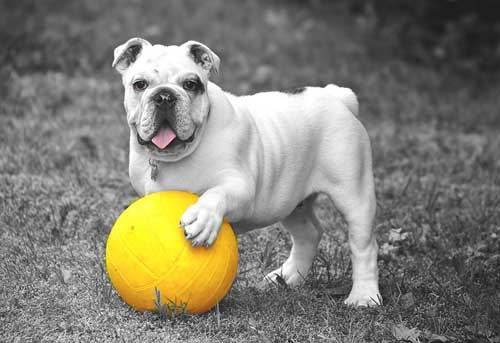

宠物百科

狗狗
狗是杂食性动物，以肉食为主，在喂养时，需要在饲料中配制较多的动物蛋白和脂肪，辅以素食成分，以保证狗的正常发育和健康的体魄。 狗的消化道比食草动物要短，狗胃盐酸含量在家畜中居于首位，加之肠壁厚吸收能力强，所以容易和适宜消化肉食食品。狗属犬科，在进食时不大咀嚼，可谓“狼吞虎咽”。 如果要喂粗纤维的蔬菜最好把蔬菜切碎或煮熟。狗喜欢啃咬骨头。这也是原生态时撕咬猎物所留下的习惯。我们在喂养时要经常给它一些骨头。

猫猫
猫拥有优良的犬齿与消化道是理想的食肉动物。牙床两侧的前臼齿与臼齿能像剪子般高效地剪肉。 当犬科动物进化出此机制时猫科动物已发展得相当进步。 与其他食肉动物不同猫几乎不吃任何植物。然而由于从前在野外求生的本能使然猫若身体不舒服、胃部累积过多毛球时会本能地寻觅青草食用。 猫通常啃食某些草的叶尖达到催吐腹中毛球及减轻身体不适的目的。 熊或狗等肉食动物常会补充如水果、根茎、蜂蜜等食物但猫则只吃肉。
养宠物须知更多>>
- 这里是宠物的走失效益效益领[2017-04-26]
- 这里是宠物的走失但是萨迪[2017-04-26]
- 这里是宠物的走失效益效益领产大会但是萨迪[2017-04-26]
- 这里是宠物的走失效益效益领[2017-04-26]
- 这里是宠物的走失但是萨迪[2017-04-26]
- 这里是宠物的走失效益效益领产大会但是萨迪[2017-04-26]